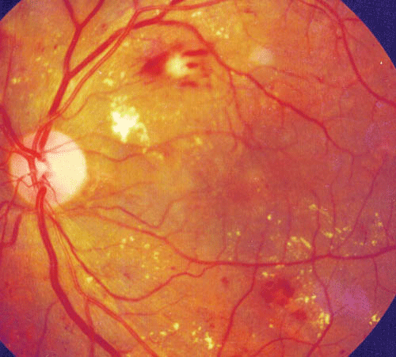
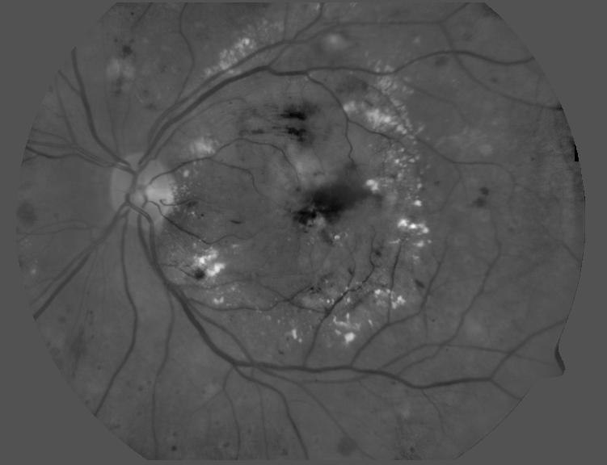
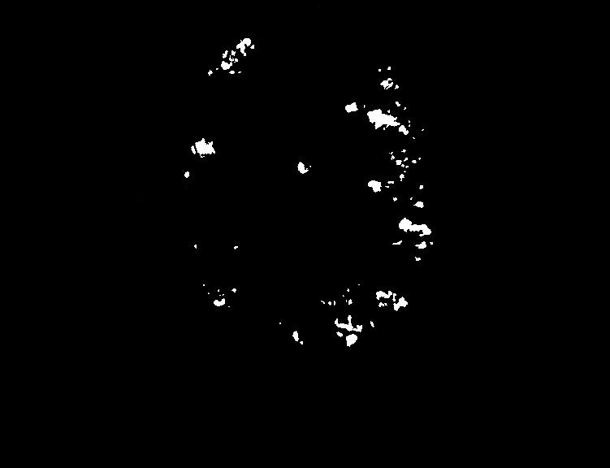

FLANN based Exudates Extraction
Motivation
As a continuation to the Glaucoma detection project we have now removed the Blood vessels from the fundus image. So the next step is to remove the Hard exudates which obstruct the ONH detection.ONH is the main marker to detect Glaucoma, but the extraction of ONH from fundus images is not accurate due to the presence of Exudates and other fundus pathogens. So in this study Blood vessels segmentation is the first step. I have applied Active contours(snakes) for this purpose.

Fig.1 - Fundus Image containing Exudatesn
Methodology
We have developed a Classification-based algorithm to extract Exudates because these approaches proved to give better performance and also have a huge scope for the implementation of the existing evolutionary algorithms.
The Classification-based methods can be broadly divided into three different steps.
- Candidate region extraction
- Feature extraction
- Classification
1. Candidate region extraction
This is the first step in the extraction process where we extract all the pixels that are probable to be exudate pixels. All the yellowish objects in the image are coarsely separated, these are the Hard Exudates candidate regions which are processed further to classify. In this study, we have employed the Luminosity and contrast Normalization due to its better estimation of exudate pixels. Other methods are:- Luminosity and contrast normalization.
- K-means clustering
- Fuzzy C-means Clustering
- LoG Transformation on different Intensity Bands
- Stationery Wavelet Transform
2. Feature Extraction
Feature selection for solving a classification based problems depends on the discriminatory power of features. Most of the traditional feature selection methods are classifier-dependent. On the other hand, for a medical image analysis a classifier independent feature analysis is more beneficiary in terms of robustness and scalability. The ideal features are defined by their ability to gather information concerning the structure of the data rather than serving the requirements of a particular classifier. Logistic regression based feature selection method is most commonly used for obtaining classifier- independent features. These are the following 13 features selected based on their higher discriminatory.- Mean of blue channel intensity inside the region.
- Mean of green channel intensity inside the region.
- Standard deviation of the red channel inside the region.
- Standard deviation of the blue channel inside the region
- Mean of green channel intensity around the region.
- Mean of blue channel intensity around the region
- Region centroid in blue channel: x
- Region centroid in blue channel: y
- Color difference of the Red channel
- Color difference of the green channel
- Color difference of the blue channel
- Region compactness
- Homogeneity
3. Classification
FLANN model, first proposed by Pao is a single layered neural network with single neuron at the output. The architecture of the FLANN contains less computational load and high convergence rate than those of traditional neural networks due to its single layered structure. FLANN model can capture the non-linear relationship between the inputs and the output unlike the Multiple Regression which can capture only linear relationship between them. Below figure shows the simplified block diagram of the FLANN model. The elements of the input pattern vector applied to the FLANN model are the feature vectors obtained from the candidate regions and the output of the model is the 1 if the region is an exudate otherwise 0. The conventional non-linear functional expansions employed in the model are Trigonometric, Legendre & Chebyshev. In this study, only trigonometric expansion is employed as it is observed experimentally that trigonometric expansion provides better performance when compared to others.
Fig.2 - Functional Link Artificial Neural Network structure.
Results
We have used the publicly available DIARETDB1 & DIARETDB0 database. The database has provided the rough ground truth and to get a more accurate classifier, we have manually labeled hard exudates in region level using the rough ground truth as the reference. For training the classifiers we have used 1290 exudate regions and 800 Non Exudate regions for training the classifiers and the minimum size of an exudate region is assumed to be 10. The simulation results were shown for the following methods using image 5 available in the DIARETDB1 database

Fig.3 - Image Details: image-05(Green channel), DIARETDB1 database.
The Green channel of the fundus image is used because of it gives high contrast in the image with less noise.

Fig.4 - Ground Truth for Exudate extraction.
The available online database do not provide a quantitative ground truth, hence we manually computed the ground truth with the help of a ophthalmologist.

Fig.5 - LCN Candidate Regions.
Candidate regions are selected by thresholding the image at the intensity on the right tail of the
histogram having probability of 10 % of the peak value. The candidate regions obtained after thresholding serve for our further steps.

Fig.6 - FLANN Classifier Output.
The FLANN classifier output which has segmented out the Hard exudates from the fundus image.

Fig.7 - Mean Square Error graph showing Convergence rate between FLANN and MLANN.
The Mean Square Error (MSE) graph of FLANN and MLANN classifiers is shown. It can be observed that the FLANN model
has a better convergence rate when compared to the MLANN model.

Fig.8 - Comparison between MLANN, RBF and FLANN in terms of #of Exudates.
The number of exudate regions classified for all images in the database are shown. From the figure we can say that the MLANN
classifier has a more tendency to classify the candidate region as an exudate region.
Conclusion
- The experimental results showed that FLANNs can detect HEs effectively and distinguish HEs accurately from other interferences when compared with MLP and RBF classifiers.
- The training time is hugely reduced with the use of FLANN classifier, when compared to the other two classifiers, MLANN and RBF.
To the Top